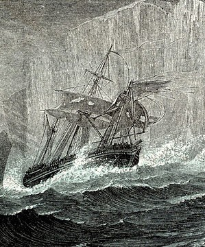
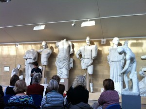
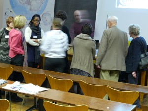
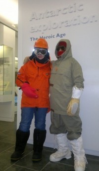
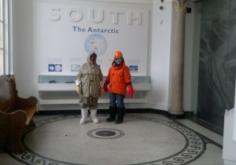
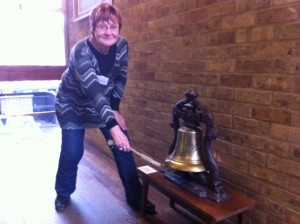

Jo Shapcott’s BBC Four radio play is now available to listen and download from the link below.
Erebus is the story of Sir John Franklin’s lost voyage to the Northwest Passage, told through the ghostly voices of the Ice Master, William Braine and Lady Jane Franklin. The music is composed by Jon Nicholls.
If you would like to find out more about Franklin’s story, visit the Polar Museum’s library catalogue: http://www.spri.cam.ac.uk/library/pictures/catalogue/bfse1857-59/

As a member of the audience the Threshold Project has been a surprising experience. The great Don Patterson humbly read his poems while standing behind a chair and said his favorite object in the Whipple Museum of the History of Sciences collection is an instrument that focuses on artificial horizons.
A week later at lunchtime I passed a sign in the grass saying NO LANGUAGE GAMES while walking to hear Sean Borodale read from his astounding Bee Journal at the Museum of Classical Archeology.
The next event was at the University Library at teatime with Gillian Clarke and Imtiaz Dharker both fresh from teaching a workshop with young Peterborough students who were so galvanized by the experience that they clapped enthusiastically after each poem.
The following evening was at the Fitzwilliam to hear part of the emotive dramatic poem ‘Pink Mist’ by Owen Sheers after which he mentioned that in years gone by summer sunbathing on the roof of the Fitz was a popular pastime for staff. Finally last Thursday at 6:00pm we gathered for Jo Shapcott’s compelling radio verse play ‘Erebus’ at the Polar Museum in a room with an enormous polar bear skin splayed on the wall next to a fierce sign: CAUTION Do Not Touch This Pelt.
Not only has the poetry been inspiring but the museums have come alive in new ways. All the events are free, there are many more to come, check the Thresholds website regularly.
What do you do with a collection of creative writers who have ventured into the wilds of Cambridge? Totally immerse them in Polar science and culture of course!
On Wednesday 23rd January, Jo Shapcott brought a group of her creative writing students and colleagues from Royal Holloway up to the Scott Polar Research Institute in Cambridge for a day of intensive polar studies. They were joined by museum staff, academics and researchers attached to the Polar Museum as well as some of our wonderful volunteers.
Starting with an introduction from the Director, Julian Dowdeswell, we were whisked through a suitably icy schedule of research talks on glaciology, reindeer herding, Arctic phantoms, colours of ice, pony shoes, polar sea beds and hand drawn maps.

Pausing briefly for refreshments, they were bombarded by a series of practical experiments involving a lot of ice and some slime!
A tour behind the scenes at the Institute, its library, archives and museum stores followed.
Naturally, the day would not have been complete without at least one writer donning the full polar gear!
It is hoped that the writers and staff will respond to the day with some suitably chilly prose and poetry…

Thresholds poet Jo Shapcott is in residence at The Polar Museum this week. Here she is with poet Kaddy Benyon setting off for a poetry workshop:

Visitors are encouraged to try on the Museum’s set of modern polar clothing of the type worn by SPRI and British Antarctic Survey staff for fieldwork in the polar regions. Other sets of modern and vintage clothing are regularly lent out to schools as part of our handling collection. You quickly learn that multiple layers and really effective insulation can keep you very warm indeed, even in sub-zero temperatures!

Ringing the ship’s bell of Terra Nova, the vessel captained by Robert Falcon Scott on his second expedition to the Antarctic, is an important part of the life of the Scott Polar Research Institute.The bell is rung twice a day on ship’s time – five bells at 10:30am and eight bells at 4:00pm – to summon staff and visiting researchers to tea. It’s a chance for everyone to get together and exchange ideas, learn about new initiatives and generally get to know one another. The bell was a gift to the Polar Museum from Lady Nicholson, whose nephew, E.L. Atkinson, was surgeon on the Terra Nova expedition, on which Scott and four of his companions died in March 1912, returning from the South Pole.